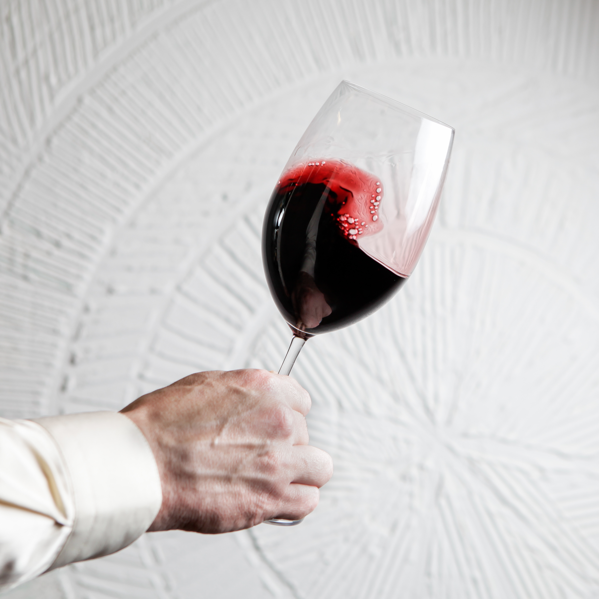

Vinhos Tintos
Encorpados e marcantes.
Há mais de 15 anos oferecendo vinhos selecionados e atendimento especializado, agora também no ambiente digital.

Vinhos Tintos
Encorpados e marcantes.

Vinhos Brancos
Leves e refrescantes.

Espumantes
Perfeitos para celebrar.
Quer aprender mais sobre vinhos? Clique aqui